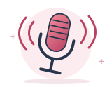
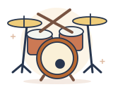
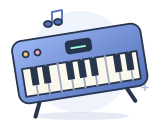
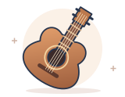
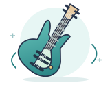
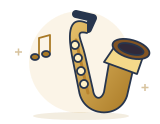

SEVEN INSTRUMENTS. ONE PRACTICE ROOM.
A little practice.
A lot of possibility.
Find the notes. Feel the rhythm. Build the habit.
Your instrument, your pace—one small win at a time.
Free local alpha · Personal learning accounts · No firmware installation
BRING WHAT YOU PLAY
Your way into music.

Singing
Find your voice.
Match pitch and melody.

Drums
Acoustic or MIDI.
Build your groove.

Piano
Falling notes.
Guided fingers.

Guitar
Follow the fretboard.
Find your next shape.

Bass
Lock into the rhythm.
Explore the neck.

Saxophone
Read the staff.
See the keys to close.
Harmonica
Know the hole.
Blow or draw.
UNDERSTAND WHAT YOU PLAY
Make the theory click.
Explore the circle of fifths, scales, chords, triads and arpeggios. Turn a pattern into a practice exercise, or explore CAGED shapes on guitar and chord-tone regions on bass.
Open your practice room →Three small steps.
01Pick an instrument and browse songs, primers, études and jazz studies.
02Play on screen, connect USB MIDI, or use a microphone for melodic notes or acoustic drum timing.
03Learn at your pace. Then keep time in Practice or Perform.
An independent learning prototype. Microphone pitch detection is experimental; it listens locally and does not record or upload audio. Guest progress stays in your browser. Sign in to save your learning, favorites and private coach chats.